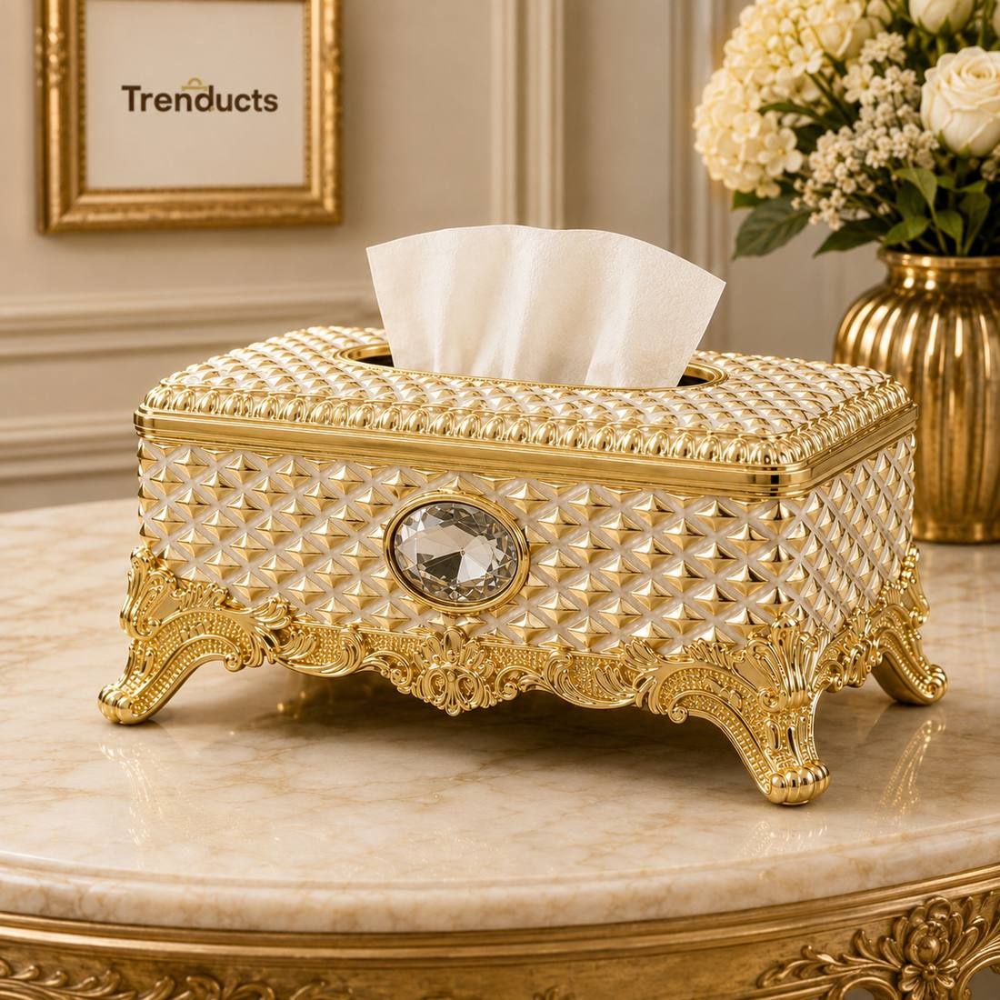
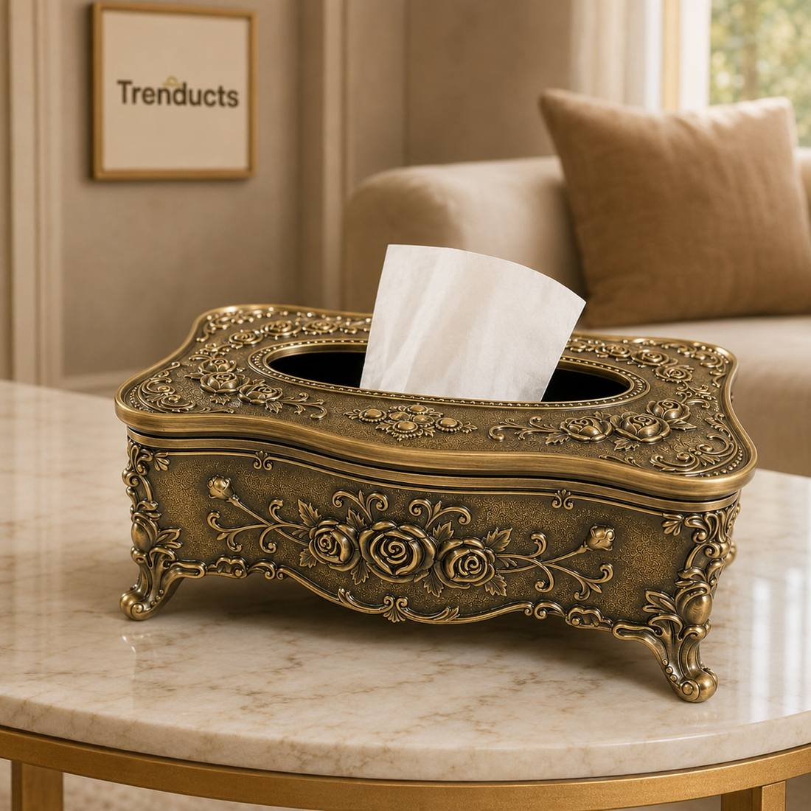
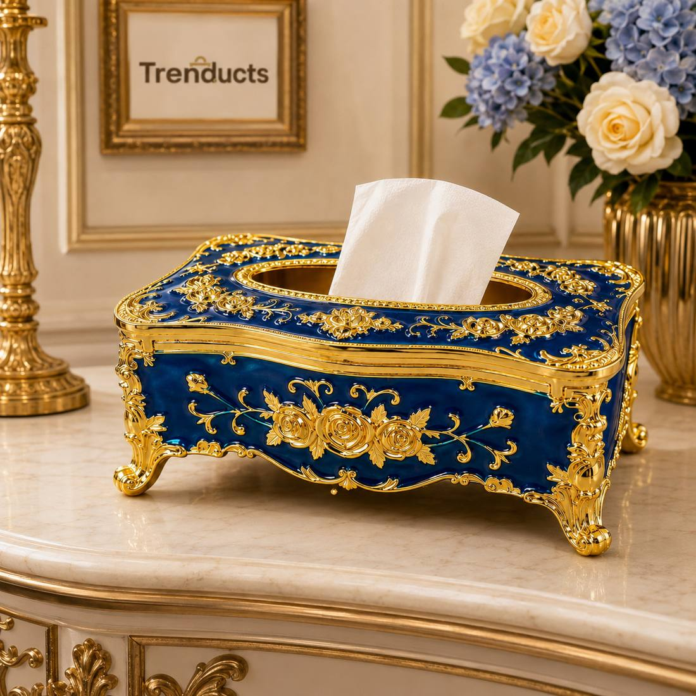

In many Pakistani homes, the drawing room is kept special. It holds the best sofas, the carpet from the jahez, the showpieces from relatives' trips abroad and the crockery for important guests. When relatives visit, when a rishta family comes, or when the elders of the neighbourhood drop by on Eid, this is where they sit. Families put a lot of care into how it looks.
Big furniture sets the stage, but small details complete it. A decorative tissue box, matching coasters, a neat tray and a few accent pieces can make a drawing room feel polished and welcoming. This guide explains how.
Why small details matter
Guests notice small things. A plain cardboard tissue box on an elegant side table looks out of place, like wearing slippers with a formal suit. When tissues, coasters and trays match the room's style, the space feels thoughtfully prepared. These items are also used constantly during visits, so they are practical as well as decorative.

Choosing a decorative tissue box
Decorative tissue boxes come in many styles. Ornate crystal designs with gold baroque bases suit formal rooms with rich colours and classic furniture. Antique bronze finishes with floral details look stunning in traditional homes. Minimal wooden or marble-finish boxes suit modern apartments. The box should be easy to refill and stable on the table. Look at the colours of your sofa, curtains and carpet, and pick a finish that echoes one of them. Many families browse the Trenducts store for decorative tissue boxes and holders that match their drawing room.
Where to place tissue boxes
In a drawing room, guests should be able to reach a tissue without asking. Place one box on the centre table and another on a side table if the room is large. Keep one near the dining area if meals are served in the same room. During dawats, when food is eaten by hand, extra tissues are always appreciated.
Coasters and trays
Pakistani hospitality means tea, cold drinks and snacks appear within minutes of a guest's arrival. Coasters protect wooden tables from rings and look neat. Choose a set that matches your tissue box or the room's metal tones. A serving tray with handles makes it easy to bring in tea and lets you clear cups quickly afterwards.

Accent pieces without clutter
It is tempting to fill every surface with showpieces, but too many make a room feel crowded and are hard to dust. Choose a few meaningful pieces: one statement item on the centre table, a vase or candle holder on a side table, and perhaps a decorative bowl. Group items in odd numbers, such as three, for a balanced look.
A quick checklist before guests arrive
- Dust surfaces, showpieces and frames
- Refill the tissue box and place coasters on the tables
- Fluff and arrange cushions
- Open curtains during the day or switch on warm lamps in the evening
- Light a subtle air freshener or incense well before guests arrive
- Keep the tea tray, cups and a snack platter ready in the kitchen
This takes fifteen minutes and makes a big difference.
Keeping it fresh between visits
Drawing rooms are often closed for days, and they can smell stale or collect dust. Open windows regularly to air the room. Cover expensive pieces if the room is rarely used, and remove the covers before guests come. Change cushion covers seasonally to keep the room feeling new.

Matching the season
Small details can change with the seasons. In winter, add a warm throw on the sofa and a candle holder on the side table. In summer, swap heavy cushion covers for light cotton ones and add fresh flowers. During Ramadan and Eid, a tray of dates or mithai and a festive lantern make the room feel special. A decorative tissue box in a neutral metallic finish fits every season, which is why it is one of the most useful pieces in any drawing room.
Final thoughts
The drawing room reflects a family's care for its guests. Alongside comfortable seating, small details like a decorative tissue box, matching coasters, a neat tray and a few chosen accents complete the picture. They are affordable, practical and leave a lasting impression on everyone who visits.